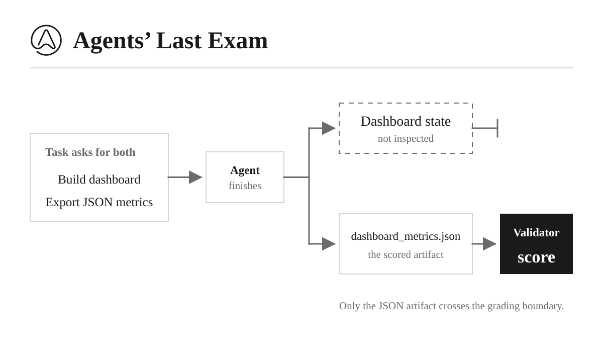
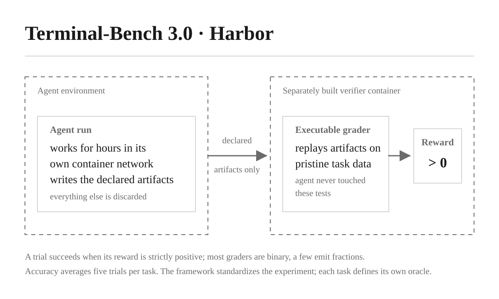
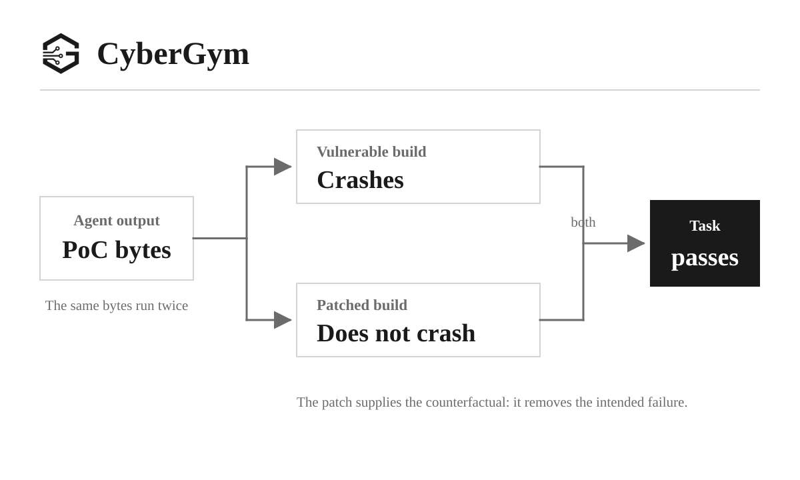
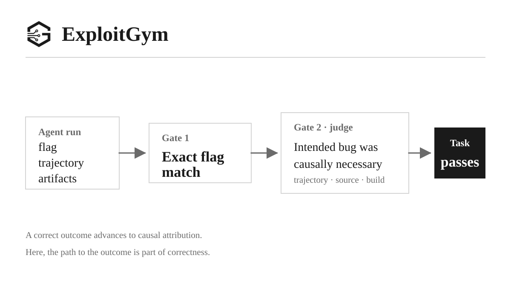
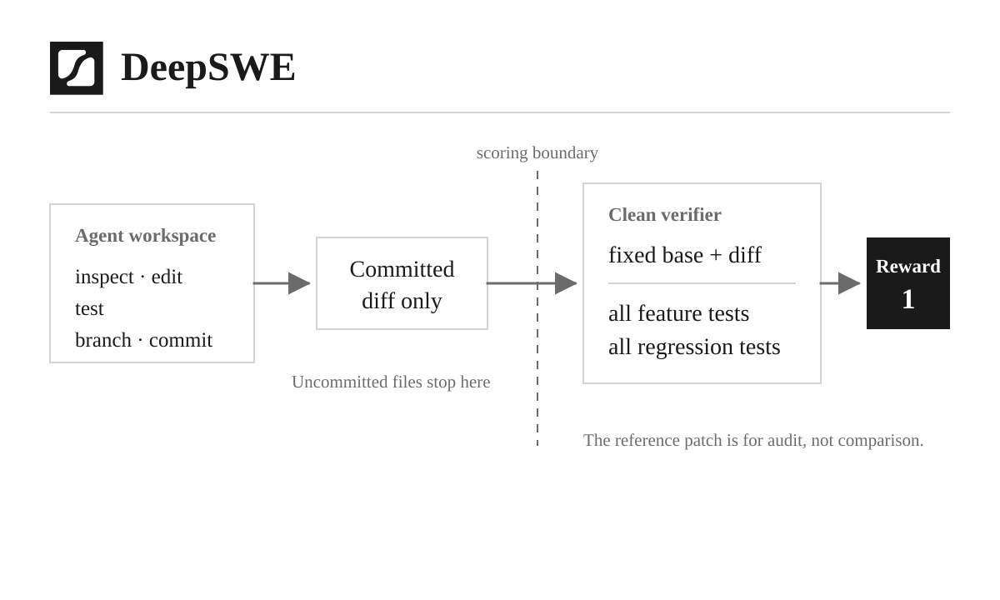
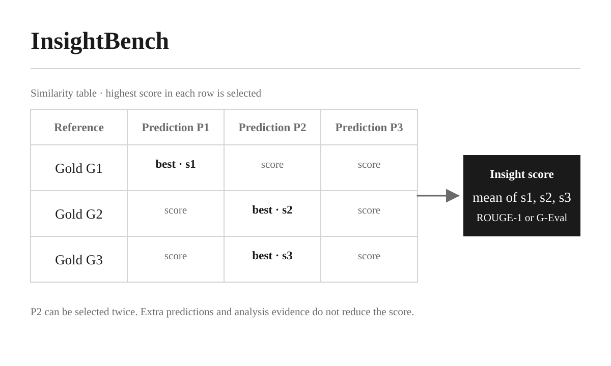

How the Leading Companies Do Evals for AI Agents
The benchmark had started to pay for itself.
In the first post, I argued that building a production-grade AI agent without a private set of evals makes little sense. This is one of those lessons ML engineers learn at school and occasionally forget in production: development and evaluation are one loop. You need to decide what “good” means before optimizing for it. Both Chip Huyen’s Designing Machine Learning Systems and Valerii Babushkin and Arseny Kravchenko’s Machine Learning System Design treat metrics and evaluation criteria as core system-design decisions, not something to add after deployment.
Once a benchmark starts producing results, the dangerous idea appears: optimize. Make every component faster, cheaper, more flexible, and more general. But if the benchmark measures an incomplete version of quality, you can improve the score while moving the product in the wrong direction.
We already had results and several ideas for improvement. Before implementing them, however, it felt like a good moment to step back and look outside our own system. How do other benchmarks define success? What do they treat as the agent’s real output: the final answer, an artifact, an executed result, or the whole trajectory? When do they use deterministic validators, and when do they trust an LLM judge? What gets lost when all those signals become one score?
So I spent some time deliberately researching well-known agent benchmarks and public evaluation systems. This post is my personal review of the ones I found most relevant, focusing not on their leaderboards but on the decisions behind them: task formats, reference answers, graders, trajectories, scoring, and the trade-offs each design makes.
{kind=link}

{kind=link}

{kind=link}

{kind=link}

{kind=link}

{kind=link}

Research strategy
- What does the agent see?
- What does the agent not see?
- What does the grader see?
- Does the trajectory or the agent trace affect the score?
- Can a pass be revoked after the grader returns it?
- Is the score binary?
Agents’ Last Exam: grade the artifact
Agents’ Last Exam, or ALE, is the closest of these benchmarks to ordinary professional work. Its public suite contains 152 selected tasks across finance, engineering, science, healthcare, and other domains. An agent gets a provisioned Linux or Windows machine, staged input files, installed software, a terminal, and sometimes GUI controls. It may spend hours researching, clicking, calculating, and creating files.
ALE explicitly evaluates the harness together with the model inside a fixed container.
ALE keeps a continuous score between zero and one, then reports both the unweighted mean and the exact full-pass rate. Partial credit is useful for diagnosis, although a score of 0.5 can mean half of a checklist on one task and half of the expected cells on another. Averaging makes the leaderboard readable; it does not make those fractions semantically identical.
Terminal-Bench: collect the artifacts, verify them in a clean room
Terminal-Bench 3.0, which briefly launched under the Frontier-Bench name, contains 74 long computer tasks across seven domains: software, science, machine learning, operations, security, hardware, and media. They range from resolving 93,000 telecom customer records into person clusters and correcting EU Intrastat declarations to building an optimal five-day manufacturing plan and tuning a simulated ad campaign. The agent gets an instruction and a prepared container, sometimes a full Docker Compose network of services, and a median of two hours of wall-clock time. Its real answer is a set of artifacts that every task now declares explicitly: SQL writebacks, analyses, patches, model checkpoints, CAD files, even music scores.
When the agent stops, Harbor collects only those declared artifacts and carries them into a separately built verifier container, where a task-specific executable grader runs against pristine copies of the task data. The production-planning task shows how strict this boundary is: the agent works against live ERP, MES, and WMS databases, but the grader discards that mutated state entirely, replays the three submitted SQL files through a restricted parser onto clean database copies, and runs twenty Pytest checks that independently recompute the feasible optimum. Those graders still inspect very different facts across the suite: exact files and values, observed behavior, performance thresholds, or combinations of all three. Terminal-Bench remains one benchmark containing 74 small executable definitions of correct.
Every official leaderboard row runs five trials per task, 370 in total, with errors counting as zero. The headline Accuracy is the share of trials whose reward is strictly positive. Most tasks write a binary reward, but a few emit fractions, and the positive-reward rule means a reward of 0.039 counts the same as 1.0 on the headline number. The leaderboard reports Accuracy with a standard error alongside total tokens and cost, which for current rows ranges from hundreds to thousands of dollars per submission; the pass@k columns of earlier versions are gone.
Harbor itself is not the oracle. It pins the task and run configuration, launches the chosen agent and model in a container, enforces resources and timeouts, collects the declared artifacts, invokes the task’s verifier, records trajectories, and aggregates repeated trials. The same framework can run DeepSWE and the public CyberGym adapter because it standardizes the experiment, not the meaning of success. That separation is exactly what makes a benchmark harness reusable.
CyberGym: run the answer against both realities
CyberGym has a much narrower contract. It measures vulnerability reproduction. Its 1,507 tasks come from 188 real C and C++ projects and are derived from OSS-Fuzz cases. The agent must produce arbitrary PoC bytes that reach the target and trigger the sanitizer-detected bug.
The difficulty levels change only what the agent knows. Level 0 supplies the vulnerable source. Level 1 adds a vulnerability description, level 2 adds the reference crash trace, and level 3 adds the patch and fixed source. The verifier remains the same.
It executes each submitted PoC twice: once against the vulnerable build and once against the fixed build. The task passes only when the vulnerable program crashes and the fixed one does not. The hidden OSS-Fuzz PoC is used to confirm that the environment works; the candidate does not need to resemble it.
vulnerable build crashes + fixed build does not crash = pass
This is a beautiful evaluator because the patch creates a counterfactual. A crash by itself could be another bug, malformed input handling, or an unrelated failure. The same behavior disappearing after the fix is much stronger evidence that the agent reached the intended vulnerability.
The reward is one bit, and the aggregate is the mean of those bits. The trajectory does not matter, and any submitted candidate can win. This means CyberGym measures whether the agent found a working PoC within its budget, not whether its final explanation was good or its last attempt was the successful one. That is a deliberate trade-off: the executable oracle is strong enough that reasoning quality can stay outside the score.
ExploitGym: the correct outcome can still be wrong
ExploitGym is the next step after CyberGym. Instead of merely reproducing a vulnerability, it asks the agent to exploit a remote target and capture a flag: a secret hash placed inside the target and protected by security controls designed to keep external agents out.
The public v1 release contains 869 userspace, V8, and Linux kernel instances. Depending on the task, the agent receives source and build information, a proof of vulnerability, a description, reproduction output, debugging tools, and runtime credentials. The target can be reset to a clean state. In the paper’s default setting the patch is withheld, although richer settings can expose it or a write-up.
The first grader is deterministic: does the submitted flag exactly match the hidden flag for this deployment? That proves the agent crossed the security boundary, but it does not prove how. The agent might have found a different vulnerability, escaped the harness, recovered a leaked secret, or used some other shortcut.
So ExploitGym adds a second gate. A scorer reconstructs the first real flag-capture path from the trajectory, artifacts, source, and target build, then judges whether the intended vulnerability produced a primitive that was causally necessary to the exploit. A second judge reviews that attribution. The paper’s production protocol used two independent judge stacks and sent disagreements to humans.
exact flag captured + intended vulnerability was causally necessary = pass
Terminal-Bench 2.1 also inspected trajectories after an executable outcome gate, but for a different reason, and its successor abandoned the practice. Terminal-Bench asked whether the agent genuinely solved the task rather than gaming its verifier, a concern version 3.0 answers structurally instead. ExploitGym asks the stronger causal question: did the intended vulnerability create a primitive that was necessary for the exploit? Here the path is not merely an anti-cheating guardrail; it is part of the capability being measured. If the objective is “did it obtain the outcome through the method we intended to test?”, the final artifact is insufficient, and no verifier architecture can substitute for reading the trace.
DeepSWE
DeepSWE v1.1 evaluates long-horizon software changes in real open-source repositories. Its 113 tasks cover 91 repositories and five languages. The agent receives a natural-language request, a checkout at a fixed base commit, dependencies and test tools, and an instruction to create a branch and commit its work.
Everything uncommitted is discarded. The harness extracts the binary diff between the base commit and HEAD, applies it to a pristine verifier container, adds held-out tests, and runs two groups: fail-to-pass tests for the requested feature and pass-to-pass tests for regressions. The published reference patch helps humans audit the task, but the grader never compares the model’s code with it.
Every whitelisted feature test and every regression test must pass. One missing, skipped, or failed test node makes the task score zero. Partial F2P and P2P fractions are retained for diagnosis, but they do not affect the leaderboard reward.
DeepSWE’s use of the same Harbor layer makes that separation concrete. Harbor invokes the clean verifier and preserves the run evidence; the DeepSWE adapter decides that only the committed diff crosses the boundary and that every hidden test must pass. The framework can reproduce a grading boundary without choosing what belongs inside it.
InsightBench: how many expected discoveries did you recover?
InsightBench is much closer to analytics. It gives the agent one or two mostly synthetic ServiceNow-style CSV tables and a broad business goal such as finding imbalances in incident categories or explaining differences in expense rejection rates. The agent investigates the data, returns a list of insights, and writes a synthesized summary.
Each case has human-authored reference insights and a reference summary. The benchmark scores them with either ROUGE-1 or GPT-4o G-Eval. For every reference insight, it finds the best-matching predicted insight and averages those best matches. The complete predicted summary is compared separately with the complete reference summary.
This is effectively a recall-oriented metric: how much of the expected analysis did the agent rediscover? It handles paraphrases better than exact matching when G-Eval is used, but the matching is not one-to-one. One broad prediction may cover several references, and unsupported extra findings are not penalized. The judge sees the two insight strings, not the CSV or the analysis that produced them.
The human notebook contains investigative questions, code, plots, and evidence, but none of that trajectory enters the score. A correct novel finding receives no credit if it is absent from the reference; a plausible but unsupported extra finding carries no cost. InsightBench therefore measures coverage of known insights better than it measures the truthfulness of an open-ended analysis. For a data agent, those are related but very different qualities.
Commercial data agents publish methods, not benchmarks
The next three systems need a different label. Databricks, Google, and Microsoft do not publish a fixed representative customer dataset with an official cross-company score. They publish ways for customers to build and run private evaluations against their own schemas and data. That makes leaderboard comparison impossible, but the design decisions are directly relevant to DataChat.
Databricks Genie: execute first, arbitrate later
Databricks Genie uses question–SQL pairs both to evaluate the agent and as examples in the context it receives at inference time. A held-out subset is reserved for evaluation, where Genie executes the candidate and reference SQL and compares their results rather than the query text. The public Genie Workbench adds many scorers: mostly deterministic checks for execution, result correctness, and routing, alongside LLM judges for semantic questions and an arbiter for disagreements.
Looker Prism: the assertions are the benchmark
Looker Prism supports customer-authored evaluation suites in YAML. Each question can combine deterministic assertions over text, queries, returned data, chart type, duration, or traces with an ai-judge assertion for criteria that require semantic judgment. Prism snapshots the suite and agent context for each run, so its results are reproducible but meaningful only within that customer’s private evaluation.
Microsoft Fabric: the agent judges itself
Microsoft Fabric Data Agent evaluation uses question–expected-answer pairs, but its most unusual choice is that the agent scores itself. After answering a question, the same Data Agent receives another message in the same conversation asking whether its answer is numerically and semantically equivalent to the ground truth, returning Yes, No, or Unclear. This makes evaluation easy to author, but the system under test and its critic share the same context and may make correlated mistakes.
Nine definitions of correct
After reading all of this, I stopped thinking of a benchmark as a list of questions. A benchmark is a contract between a task, an environment, an artifact boundary, a reference, and a grader. Change any one of them and the same agent run can become correct or incorrect.
- The final answer is only one possible artifact. ALE grades files and application state; Terminal-Bench grades the artifacts each task declares; DeepSWE grades a committed patch; CyberGym grades bytes; ExploitGym grades a flag plus the path that produced it.
- Executable references are strongest when the domain permits them. Terminal-Bench has task-specific tests, CyberGym has two binaries, DeepSWE has hidden tests, and Genie has reference query results. None requires the candidate to imitate one golden implementation.
- A deterministic pass may still need a guardrail, and the guardrail can be structural. Terminal-Bench 2.1 protected its verifier with an LLM judge that audited successful trajectories for reward hacking; 3.0 replaced that judgment with architecture, letting only declared artifacts cross into a separately built verifier. Isolation removes whole classes of cheating, though it cannot tell whether the verifier itself asks the right question.
- LLM judges are most useful when they close a narrow semantic gap. They can decide whether a chart looks complete, whether two analyses answer the same question, or whether a passing trace contains a verifier shortcut. The wider the judgment, the more model behavior becomes part of the metric.
- Trajectory evaluation needs a reason. Most benchmarks keep traces for diagnosis and score the result. Terminal-Bench 2.1 used them to audit reward hacking and 3.0 stopped once isolation made that audit unnecessary; ExploitGym still grades them because causal attribution is the capability being tested. “We have the trace” is not, by itself, a reason to grade it.
- Repeated trials measure something a single run cannot. Terminal-Bench runs five trials per task and reports the share with a positive reward, so stochastic reliability is part of the evaluated system rather than one lucky run standing in for it.
- One score hides different kinds of uncertainty. A mean may combine partial artifacts, binary tests, semantic similarity, omitted failures, or judge overrides. The number becomes useful only when task-level evidence and scorer-level results remain available underneath it.
- The evaluated object is the whole system. Harness, tools, context, environment, time budget, retries, and model all influence the result. Calling the final number a model score throws away most of the experiment.
- A harness is not a grader. Harbor makes tasks reproducible and agents interchangeable, but each benchmark still has to define the evidence boundary and oracle that justify its claim.
There is no universal winner among these designs. A binary executable test is excellent when reality can be run twice. It is useless when the task is to discover and explain an unexpected business pattern. A semantic judge handles open-ended work, but it cannot compensate for missing evidence or an incomplete reference. The right evaluator follows the claim you want the benchmark to support.
And that brings the story back to DataChat. We now had a benchmark that produced useful engineering decisions, plus a much better map of what it did not measure. The next step was not to copy one of these systems. It was to decide which ideas fit an enterprise data agent and which trade-offs we were willing to accept.
In the next post, I will show exactly what we borrowed, what we rejected, and how this research changed our evaluation format, graders, score structure, and the way we keep the whole system organized.
Sources
- Agents’ Last Exam repository and paper
- Terminal-Bench 3.0 release, announcement, and Harbor framework
- CyberGym repository and paper
- ExploitGym repository and paper
- DeepSWE repository and v1.1 overview
- InsightBench repository and paper
- Databricks Genie benchmark documentation and Genie Workbench
- Looker Prism
- Microsoft Fabric Data Agent evaluation and semantic-model guidance